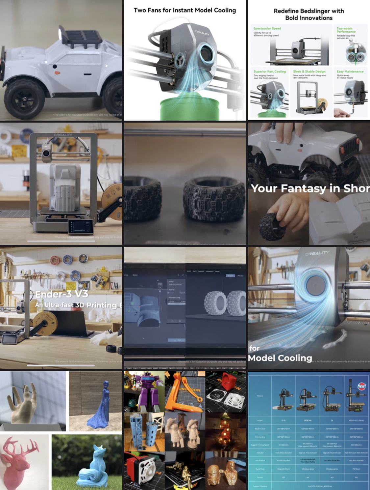

خطة استثمار في الطابعات ثلاثية الأبعاد KINGROON KP3S, KP3S PRO, KP5L
جدول الدراسة الشاملة لجني الأرباح
| البند |
التفاصيل |
التكلفة (تقديرية) |
الأرباح المتوقعة |
الملاحظات |
| المرحلة 1: التحضير |
أبحاث السوق |
500$ |
- |
|
| شراء الطابعات |
1500$ |
- |
|
| شراء المواد |
300$ |
- |
|
| تعلم التصميم |
200$ |
- |
|
| المرحلة 2: تطوير المهارات |
تصميم المنتجات |
0$ |
- |
يعتمد على المهارات المكتسبة |
| صيانة الطابعات |
0$ |
- |
|
| المرحلة 3: إنشاء المنتجات والخدمات |
منتجات مخصصة |
0$ |
200$ شهريًا |
|
| خدمات النماذج الأولية |
0$ |
300$ شهريًا |
|
| المجموعات التعليمية |
0$ |
150$ شهريًا |
|
| الأجهزة الطبية والأدوات المساعدة |
0$ |
250$ شهريًا |
|
| المرحلة 4: المساهمات الاجتماعية والاقتصادية |
ورش العمل المجتمعية |
0$ |
100$ شهريًا |
|
| خدمات الإصلاح |
0$ |
100$ شهريًا |
|
| التعاون مع الأعمال المحلية |
0$ |
200$ شهريًا |
|
| دعم المنظمات غير الربحية |
0$ |
- |
مساهمة اجتماعية |
| المرحلة 5: التسويق والمبيعات |
التواجد عبر الإنترنت |
200$ |
- |
|
| الأسواق المحلية |
100$ |
- |
|
| الشبكات |
0$ |
- |
|
| المرحلة 6: التحسين المستمر |
جمع التغذية الراجعة |
0$ |
- |
|
| مواكبة التطورات |
0$ |
- |
|
| توسيع العروض |
0$ |
- |
|
graph TD
A[المرحلة 1: التحضير] --> B[أبحاث السوق]
A --> C[شراء الطابعات]
A --> D[شراء المواد]
A --> E[تعلم التصميم]
B --> F[تحديد المجالات المتخصصة]
C --> G[اختيار الطابعات المناسبة]
D --> H[توفير المواد اللازمة]
E --> I[تعلم برامج التصميم]
J[المرحلة 2: تطوير المهارات] --> K[تصميم المنتجات]
J --> L[صيانة الطابعات]
K --> M[إنشاء نماذج أولية]
L --> N[تعلم الصيانة]
O[المرحلة 3: إنشاء المنتجات والخدمات] --> P[منتجات مخصصة]
O --> Q[خدمات النماذج الأولية]
O --> R[المجموعات التعليمية]
O --> S[الأجهزة الطبية والأدوات المساعدة]
P --> T[بيع منتجات مخصصة]
Q --> U[خدمات للشركات]
R --> V[مجموعات تعليمية للمدارس]
S --> W[أجهزة طبية مخصصة]
X[المرحلة 4: المساهمات الاجتماعية والاقتصادية] --> Y[ورش العمل المجتمعية]
X --> Z[خدمات الإصلاح]
X --> AA[التعاون مع الأعمال المحلية]
X --> AB[دعم المنظمات غير الربحية]
Y --> AC[تعليم الطباعة ثلاثية الأبعاد]
Z --> AD[إصلاح الأشياء المكسورة]
AA --> AE[حلول مخصصة للأعمال]
AB --> AF[خدمات للمنظمات غير الربحية]
AG[المرحلة 5: التسويق والمبيعات] --> AH[التواجد عبر الإنترنت]
AG --> AI[الأسواق المحلية]
AG --> AJ[الشبكات]
AH --> AK[متجر إلكتروني]
AI --> AL[معارض وأسواق محلية]
AJ --> AM[بناء علاقات]
AN[المرحلة 6: التحسين المستمر] --> AO[جمع التغذية الراجعة]
AN --> AP[مواكبة التطورات]
AN --> AQ[توسيع العروض]